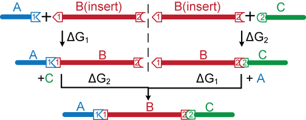
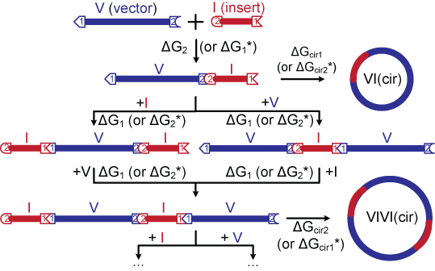

NP-Sticky: Model-Guided Ligation Calculator
Model Schematic
Viewing ligation as a two-step process, a thermodynamic model was developed for both linear ligation and vector-insert (circular) ligation for DNA fragments generated by Type IIS restriction enzymes. The first step is annealing of two sticky ends by hydrogen bonding across complementary bases (with or without stacking between adjacent bases), and the second step is sealing of the DNA backbone by the formation of phosphodiester bonds. We modeled each ligation reaction as a reversible equilibrium process with the free energy defined by the identity of the sticky ends involved in that particular reaction. This thermodynamic model was used to quantitatively predict output products from input fragments at equilibrium.
Linear Ligation
The figure below shows the three-piece linear ligation model for non-palindromic sticky ends. All possible species are considered. Since the sticky ends are designed and generated by Type IIS restriction enzymes to minimize mis-annealing, we assume no homodimer formation, no cross-reactivity between sites 1 and 2, and no blunt-end ligation.

Circular Ligation
The figure below shows the vector-insert ligation model for non-palindromic sticky ends. Species containing up to four fragments are explicitly included and any higher order molecules are assumed to be insignificant. The probability of circularization is reflected by the Jacobson-Stockmayer factor j which represents the effective concentration of one end of a linear molecule with respect to the other. If the competing DNA concentration is above j, linear multimers will be favored; conversely, circularization will be favored if the DNA concentration is below j. ΔGcir1 and ΔGcir2 are calculated by dividing the corresponding equilibrium constants by this effective concentration factor.

Last modified by Daphne Ng on Jan 4th, 2014